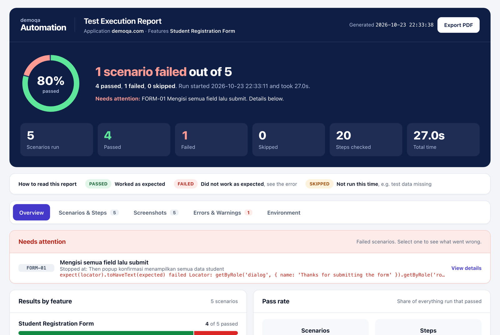
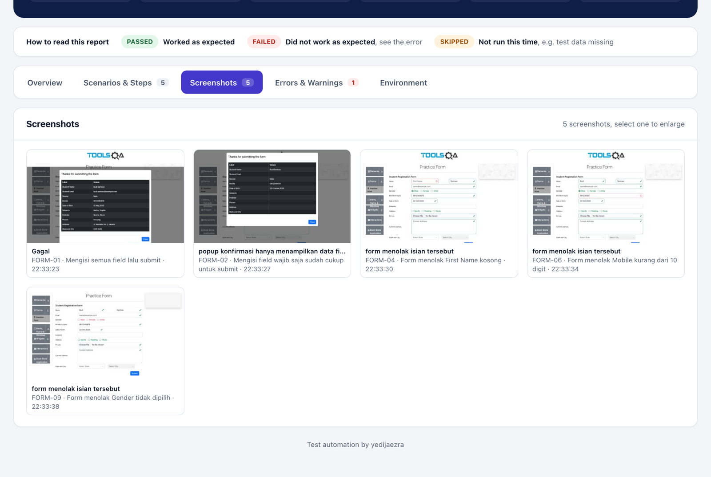
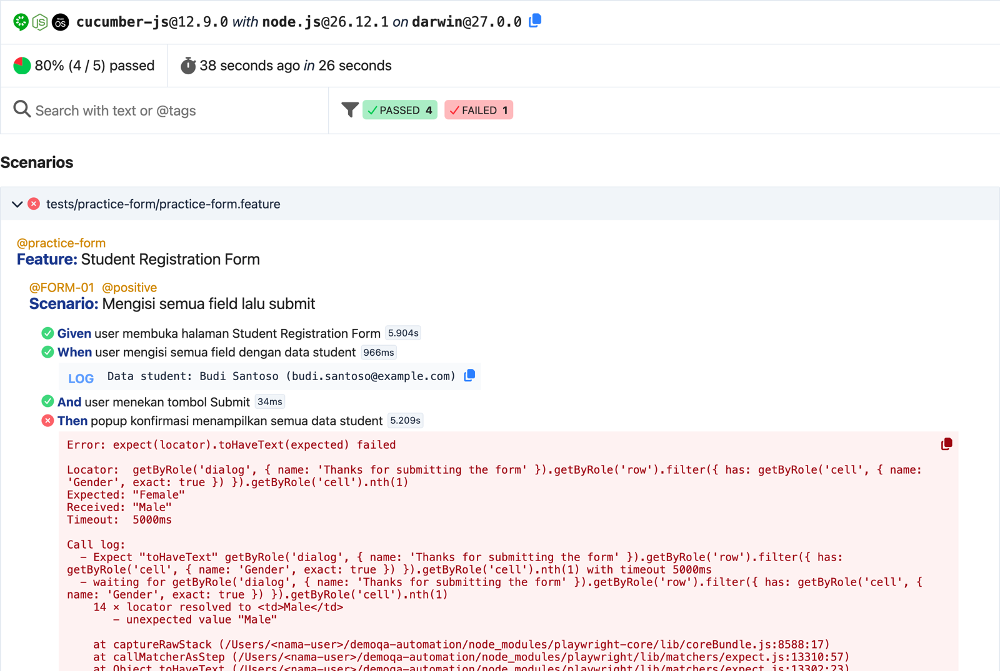

When a test fails, you see why and where right away.
I wrote automated tests for four pages of demoqa.com with Playwright, TypeScript, and Cucumber, using the Page Object Model. I also built the terminal output and the HTML report myself, because Cucumber's defaults are hardest to read exactly when something fails.
Coverage: 28 scenarios on 4 pages. 11 positive, 17 negative Playwright 1.63 · Cucumber 12.9 TypeScript · Node.js 20.12+ Single-file HTML report, PDF export
[1/6] Terminal
The same failure, reported two ways
Both outputs come from one run: five Student Registration Form test cases, with FORM-01 failing on purpose (I changed the expected Gender in the test data to "Female").
The project is written in Indonesian, so the custom output is too. Seharusnya is the expected value, Tertulis is what the page shows, Skenario and Kode are the scenario and code locations, and dtk means seconds.
Cucumber default
full output....F......................... Failures: 1) Scenario: Mengisi semua field lalu submit # features/practice-form/practice-form.feature:8 ✔ Before (Buka browser) # support/hooks.ts:29 ✔ Given user membuka halaman Student Registration Form # features/practice-form/practice-form.steps.ts:10 ✔ When user mengisi semua field dengan data student # features/practice-form/practice-form.steps.ts:17 Attachment (text/x.cucumber.log+plain) ✔ And user menekan tombol Submit # features/practice-form/practice-form.steps.ts:58 ✖ Then popup konfirmasi menampilkan semua data student # features/practice-form/practice-form.steps.ts:72 Error: Nilai Gender di popup konfirmasi should display "Female" | last attempt: Expected "Female", received "Male" | attempts: 47, elapsed: 5003ms, timeout: 5000ms at UIAssert.poll (~/demoqa-automation/src/core/UIAssert.ts:43:11) at async UIAssert.text (~/demoqa-automation/src/core/UIAssert.ts:151:5) at async PracticeFormPage.verifyConfirmation (~/demoqa-automation/features/practice-form/practice-form.page.ts:94:7) at async TestWorld.<anonymous> (~/demoqa-automation/features/practice-form/practice-form.steps.ts:75:5) ✔ After (Tutup browser) # support/hooks.ts:54 Attachment (image/png): Gagal 5 scenarios (1 failed, 4 passed) 20 steps (1 failed, 19 passed) 0m21.145s (executing steps: 0m21.133s)
The home folder in the stack trace is shortened to ~.
- While tests run you only see dots, with no test case names.
- The reason is one long English line with retry counters, and the stack trace starts inside the core layer instead of at the check that failed.
Custom
full output✘ [1/5] FORM-01 Mengisi semua field lalu submit 8,9 dtk ✔ Given user membuka halaman Student Registration Form 2,5 dtk ✔ When user mengisi semua field dengan data student 1,0 dtk ✔ And user menekan tombol Submit 0,0 dtk ✘ Then popup konfirmasi menampilkan semua data student 5,2 dtk Teks tidak sesuai Seharusnya: "Female" Tertulis: "Male" Elemen: Nilai Gender di popup konfirmasi Skenario: features/practice-form/practice-form.feature:11 Kode: features/practice-form/practice-form.page.ts:94 Step: features/practice-form/practice-form.steps.ts:72 ✔ [2/5] FORM-02 Mengisi field wajib saja sudah cukup untuk submit 3,0 dtk ✔ [3/5] FORM-04 Form menolak First Name kosong 3,0 dtk ✔ [4/5] FORM-06 Form menolak Mobile kurang dari 10 digit 3,5 dtk ✔ [5/5] FORM-09 Form menolak Gender tidak dipilih 2,7 dtk Selesai: 5 skenario dalam 0 mnt 21 dtk. 4 LOLOS, 1 GAGAL Yang perlu dicek: ✘ FORM-01 Mengisi semua field lalu submit features/practice-form/practice-form.feature:8
- One line per test case, with its TC number and duration.
- A failed test case lists all of its steps, the reason in plain words, and the expected value next to what the page actually shows.
- Kode skips the core layer and points at the page object line that made the check.
- Three locations you can cmd+click in the VS Code terminal, then a summary and a list of tests to check.
[2/6] Failures
From one red line to the file you need to open
I wrote the failure messages so that whoever maintains this suite knows which file to open without asking me. Each location in the message points to one layer of the code.
- Find the step marked ✘. The first three steps passed. The popup check is the one that failed.
- Read the reason. The test expected Gender "Female", but the popup says "Male". The Elemen line points to the second cell in the Gender row.
- Open the location. Skenario, Step, and Kode each open the file at the exact line. Use the tabs to see what is there.
- Decide what is wrong. Here the app is right and the expected data is wrong, so the fix goes in the JSON file.
The first line of a failure usually tells you where to look
| Failure reason | What to check |
|---|---|
Teks tidak sesuaiText does not match | The expected value in test-data/<feature>.json. If the data is right, the app probably changed or has a bug. |
Jumlah elemen tidak sesuaiElement count does not match | The test data or the app's behavior, such as the number of rows in a table. |
Elemen tidak terlihat di layar, elemen tidak ditemukan di halamanElement not visible, element not found on the page | The selector in features/<feature>/<feature>.locators.ts. Usually the page layout changed. |
Elemen tidak muncul setelah ... detikElement did not appear after ... seconds | The selector, or a slow page. |
Tidak bisa mengklik dalam ... detikCould not click within ... seconds | The selector, or an element covered by something else, such as a popup. |
Step ini belum punya step definitionThis step has no step definition yet | A new step in the .feature file with no match in the steps file. |
Halaman tidak bisa dibuka (...)The page could not be opened | The internet connection, or demoqa itself being down. |
[3/6] Report
An HTML report a PM can read without opening the code
npm test writes reports/test-report.html and opens it in the browser. The report is a single file, so you can double-click it or send it to someone without a server.

- Overview
- Pass rate, results per page, failed test cases, and the duration of each test case.
- Scenarios & Steps
- Every test case and its steps with status, duration, logs, error messages, and screenshots. You can search and filter by status.
- Screenshots
- Every screenshot in one gallery, taken at each result check and whenever a test case fails.
- Errors & Warnings
- All failures in one list, with stack traces that use paths relative to the project folder.
- Environment
- The tested URL, browser, viewport, timeout, tags, and the Node.js, Cucumber, and Playwright versions.


[4/6] Coverage
28 scenarios, most of them feeding the app bad input
11 positive scenarios check that each feature works as intended. 17 negative scenarios check that the app rejects wrong input or actions. Every scenario has its own TC number and can be run by tag.
-
Web Tables
demoqa.com/webtables · WEBTABLES-01 to 09
- 3 positive
- Adds 5 users at once and checks each one in the table, searches for a user, deletes a user.
- 6 negative
- A search with no results, and the Add form rejecting an email without @, an empty First Name, letters in Age or Salary, and an empty form.
-
Student Registration Form
demoqa.com/automation-practice-form · FORM-01 to 10
- 3 positive
- All fields filled, only the required fields filled, and a Mobile number over 10 digits cut down to 10.
- 7 negative
- Empty First Name or Last Name, Mobile under 10 digits or containing letters, an email without @, no Gender selected, and an empty form.
-
Resizable
demoqa.com/resizable · RESIZABLE-01 to 05
- 3 positive
- Resizing to 400 × 200, to the 150 × 150 minimum, and to the 500 × 300 maximum.
- 2 negative
- Dragging past the maximum or below the minimum, where the box has to stop at the limit.
-
Droppable
demoqa.com/droppable · DROPPABLE-01 to 04
- 2 positive
- The Drag Me box is accepted on the Simple tab, and the Acceptable box is accepted on the Accept tab.
- 2 negative
- A box dropped outside the target, and the Not Acceptable box rejected on the Accept tab.
[5/6] Structure
Every layer only talks to the one below it
Feature files only hold steps in plain language. Page objects never call Playwright directly: every action goes through UIAction and every check through UIAssert, so waiting and failure messages work the same way on every page.
features/
web-tables/
web-tables.feature scenarios in plain language
web-tables.steps.ts connects scenarios to the page
web-tables.page.ts page actions and checks (verify)
web-tables.locators.ts element selectors
droppable/ same layout
resizable/ same layout
practice-form/ same layout
components/ UI modules shared across pages
src/
core/
UIAction.ts every browser action
UIAssert.ts every check, retried until it passes
config/env.ts settings from .env
utils/browser.ts BrowserManager, one browser per scenario
support/
hooks.ts scenario lifecycle, screenshots, video
world.ts TestWorld, state for one scenario
test-data/ test data per page, as JSON
tools/ HTML report, suite command, extension
.featureTest steps that non-technical people can read. The Skenario location in a failure points here.
.steps.tsA thin link between a sentence in the scenario and a method in the page object. The Step location points here.
.page.tsand.locators.tsPage actions and checks, with selectors kept in their own file. The Kode location points here.
src/core/UIActionandUIAssert. Checks retry on a condition, never a fixed sleep, and fail with a message the terminal turns into plain words.test-data/*.jsonInput values and expected values for each page.
Test Suites
Four ready-made suites (Regresi, Smoke, Positif, Negatif) live in test-suites.json and run in the listed order with npm run suite -- Smoke.
VS Code extension
Optional, and also built by me. It shows every scenario in the Testing panel, runs them by tag, and lets you build Test Suites with checkboxes and drag-to-reorder.
Unit tests for the error messages
The plain-language failure sentences have their own unit tests, which run with the TypeScript type check and the format check in npm run check.
[6/6] Run it
Run it on your own machine
You need Node.js 20.12 or newer. The commands are the same on macOS, Linux, and Windows. When the tests finish, the HTML report opens in your browser.
Get the code
git clone https://github.com/yedijaezra29/demoqa-automation.gitInstall dependencies (once)
npm installInstall Chromium for Playwright
npx playwright install chromiumRun every test and open the report
npm testOr run only the negative tests
npm test -- --tags @negative
Settings in .env
| Setting | Default | What it does |
|---|---|---|
BROWSER | chromium | Also accepts firefox or webkit |
HEADLESS | true | Set to false to watch the browser |
DEFAULT_TIMEOUT | 15000 | How long to wait for an element, in milliseconds |
STEP_SCREENSHOT | expected | Screenshot at every check, every step, or only on failure |
REPORT_OPEN | true | Set to false to stop the report opening by itself |